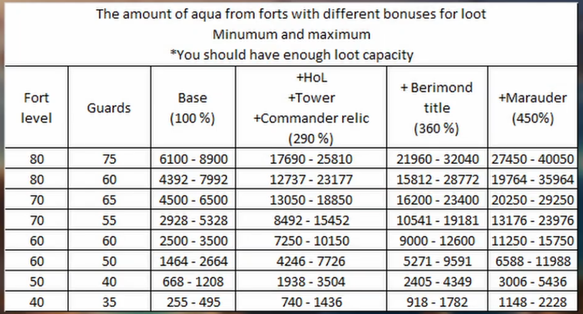

Les îles orageuses
Présentation de l'événement
- Quoi ? Événement mensuel dans la carte des royaumes, un royaume comme le glacier, les sables ou les pics.
- Avec quoi ? Un CP (Château Principal), parmi trois options : fort orageux (bois/pierre/bouffe/pièces), bastion orageux (bois/pierre/bouffe/pièces) et fort impérial (rubis).
- Pourquoi ? Plein de récompenses par palier de cargo (individuelles et alliances) sans compter la barge de Luna pour échanger des aigues-marines contre des récompenses (pièces, sabliers, décorations, équipements, engins…).

- Quand ? Dès le début de chaque mois. On peut construire un CP aux îles qui disparaît à la fin du même mois, avant que les récompenses soient attribuées.

Ressources : Aigue-marine

Forts

CP îles

Barge de Luna

Bonus
Pour optimiser les gains, il fut un max de soso entre 7 et 9h. Attaquer les forts lvl 60-80, avec au moins 2 à 3 victoires avant sombrer en fonction de la distance fort-cp. Acheter le mraudeur permet d'accroître le pillage des forts et les qte d'aigue-marine. Pour les cp, prendre le plus tôt possible ddns le mois. Spawn vers le milieu donc, c'est là où il y a le plus de forts.


Optimiser les gains
Une îles aigue-marine réapparaît exactement 72 heures après avoir coulé. Pour optimiser les temps et optimiser ses chances de capturer une île, noter les coordonnées d'une île + le temps supposés après pillage.
Coordonnées ici